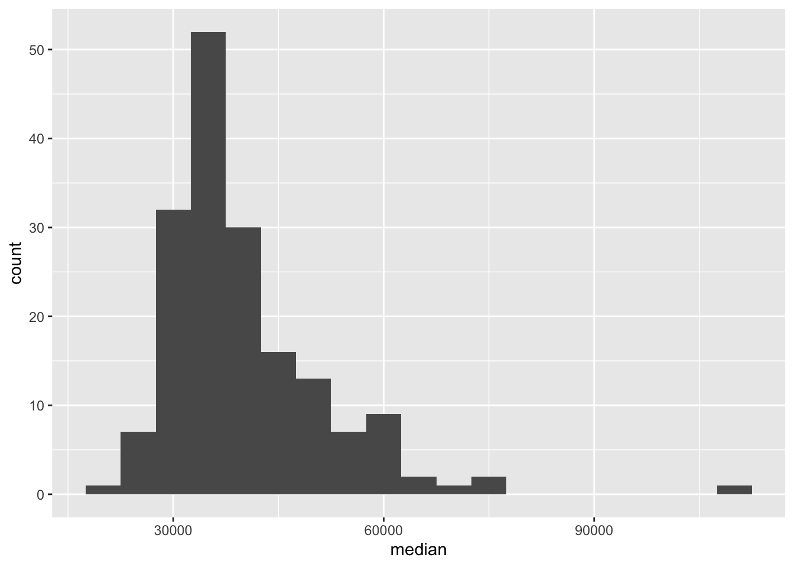
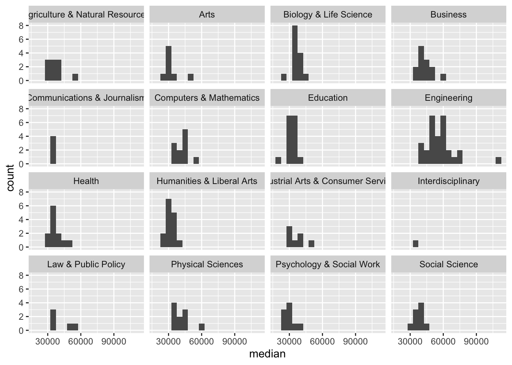
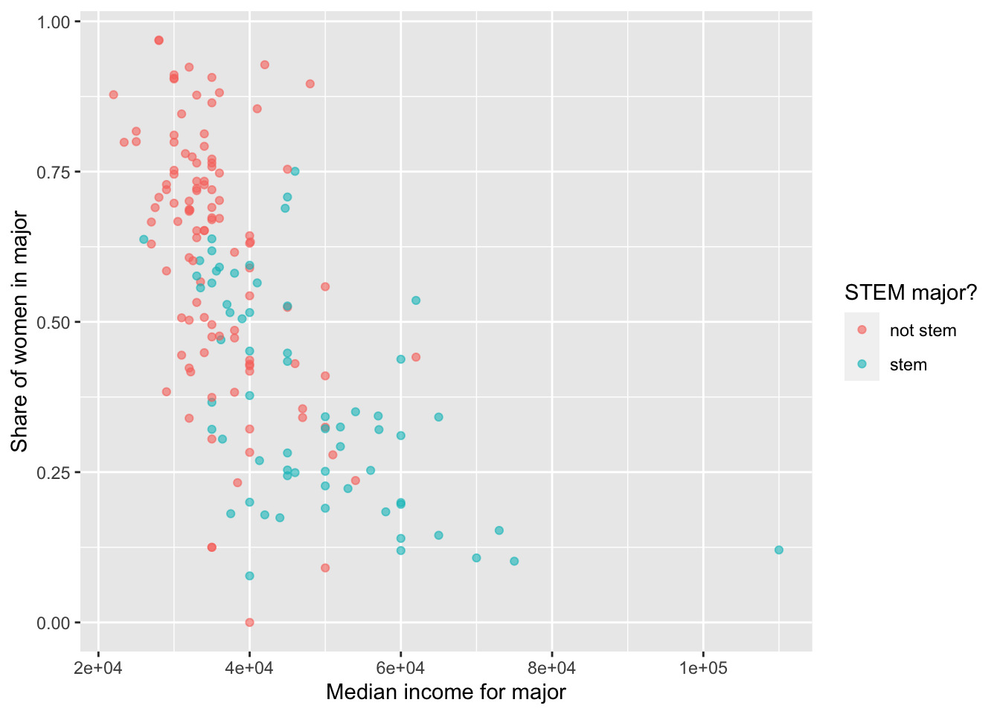

library(tidyverse) Lab 03 - Data Visualization (Ans)
Load packages
Load data
college_recent_grads <- read_csv("data/recent-grads.csv")Rows: 173 Columns: 21
── Column specification ────────────────────────────────────────────────────────
Delimiter: ","
chr (2): major, major_category
dbl (19): rank, major_code, total, sample_size, men, women, sharewomen, empl...
ℹ Use `spec()` to retrieve the full column specification for this data.
ℹ Specify the column types or set `show_col_types = FALSE` to quiet this message.glimpse(college_recent_grads)Rows: 173
Columns: 21
$ rank <dbl> 1, 2, 3, 4, 5, 6, 7, 8, 9, 10, 11, 12, 13,…
$ major_code <dbl> 2419, 2416, 2415, 2417, 2405, 2418, 6202, …
$ major <chr> "Petroleum Engineering", "Mining And Miner…
$ major_category <chr> "Engineering", "Engineering", "Engineering…
$ total <dbl> 2339, 756, 856, 1258, 32260, 2573, 3777, 1…
$ sample_size <dbl> 36, 7, 3, 16, 289, 17, 51, 10, 1029, 631, …
$ men <dbl> 2057, 679, 725, 1123, 21239, 2200, 2110, 8…
$ women <dbl> 282, 77, 131, 135, 11021, 373, 1667, 960, …
$ sharewomen <dbl> 0.1205643, 0.1018519, 0.1530374, 0.1073132…
$ employed <dbl> 1976, 640, 648, 758, 25694, 1857, 2912, 15…
$ employed_fulltime <dbl> 1849, 556, 558, 1069, 23170, 2038, 2924, 1…
$ employed_parttime <dbl> 270, 170, 133, 150, 5180, 264, 296, 553, 1…
$ employed_fulltime_yearround <dbl> 1207, 388, 340, 692, 16697, 1449, 2482, 82…
$ unemployed <dbl> 37, 85, 16, 40, 1672, 400, 308, 33, 4650, …
$ unemployment_rate <dbl> 0.018380527, 0.117241379, 0.024096386, 0.0…
$ p25th <dbl> 95000, 55000, 50000, 43000, 50000, 50000, …
$ median <dbl> 110000, 75000, 73000, 70000, 65000, 65000,…
$ p75th <dbl> 125000, 90000, 105000, 80000, 75000, 10200…
$ college_jobs <dbl> 1534, 350, 456, 529, 18314, 1142, 1768, 97…
$ non_college_jobs <dbl> 364, 257, 176, 102, 4440, 657, 314, 500, 1…
$ low_wage_jobs <dbl> 193, 50, 0, 0, 972, 244, 259, 220, 3253, 3…Data wrangling and visualization
Which major has the lowest unemployment rate?
college_recent_grads |>
arrange(unemployment_rate) |>
select(rank, major, unemployment_rate)# A tibble: 173 × 3
rank major unemployment_rate
<dbl> <chr> <dbl>
1 53 Mathematics And Computer Science 0
2 74 Military Technologies 0
3 84 Botany 0
4 113 Soil Science 0
5 121 Educational Administration And Supervision 0
6 15 Engineering Mechanics Physics And Science 0.00633
7 20 Court Reporting 0.0117
8 120 Mathematics Teacher Education 0.0162
9 1 Petroleum Engineering 0.0184
10 65 General Agriculture 0.0196
# … with 163 more rowsDisplay only 4 decimal places using mutate and round:
college_recent_grads |>
arrange(unemployment_rate) |>
select(rank, major, unemployment_rate) |>
mutate(unemployment_rate = round(unemployment_rate, digits = 4))# A tibble: 173 × 3
rank major unemployment_rate
<dbl> <chr> <dbl>
1 53 Mathematics And Computer Science 0
2 74 Military Technologies 0
3 84 Botany 0
4 113 Soil Science 0
5 121 Educational Administration And Supervision 0
6 15 Engineering Mechanics Physics And Science 0.0063
7 20 Court Reporting 0.0117
8 120 Mathematics Teacher Education 0.0162
9 1 Petroleum Engineering 0.0184
10 65 General Agriculture 0.0196
# … with 163 more rowsDisplay 2 scientific digits using options:
options(digits = 2)Exercise 1
Which of these options, changing the input data or altering the number of digits displayed without touching the input data, is the better option? Explain your reasoning. Then, implement the option you chose.
I prefer the options approach because it will enforce consistency each time we display variables, without having to make the call to round each time (without changing the underlying data).
Which major has the highest percentage of women?
Exercise 2
Using what you’ve learned so far, arrange the data in descending order with respect to proportion of women in a major, and display only the major, the total number of people with major, and proportion of women. Show only the top 3 majors by adding head(3) at the end of the pipeline.
The sharewomen column lists the proportion of women in each major. So we can arrange our data in descending order using desc(sharewomen), then select the columns we want: major, total, and sharewomen. We then just display the top 3 majors using head(3).
college_recent_grads |>
arrange(desc(sharewomen)) |>
select(major, total, sharewomen) |>
head(3)# A tibble: 3 × 3
major total sharewomen
<chr> <dbl> <dbl>
1 Early Childhood Education 37589 0.969
2 Communication Disorders Sciences And Services 38279 0.968
3 Medical Assisting Services 11123 0.928How do the distributions of median income compare across major categories?
Exercise 3
Why do we often choose the median, rather than the mean, to describe the typical income of a group of people?
The mean is more affected by the presence of outliers and by the skew of the distribution. Thus, the presence of a single person with very high income can increase the mean substantively, such that it’s no longer a good impression of the overall distribution. In contrast, the median (or the “middle number”) tells us the income exactly in the middle of the distribution.
Exercise 4
Try binwidths of $1000 and $5000 and choose one. Explain your reasoning for your choice. Note that the binwidth is an argument for the geom_histogram function. So to specify a binwidth of $1000, you would use geom_histogram(binwidth = 1000).
ggplot(data = college_recent_grads, mapping = aes(x = median)) +
geom_histogram(binwidth=5000)
I ended up choosing binwidth=5000. When binwidth=1000, there were too many small differences in income that were thus not grouped together, and it was harder to see the overall shape of the distribution.
We can also calculate summary statistics for this distribution using the summarise function:
college_recent_grads |>
summarise(min = min(median), max = max(median),
mean = mean(median), med = median(median),
sd = sd(median),
q1 = quantile(median, probs = 0.25),
q3 = quantile(median, probs = 0.75))# A tibble: 1 × 7
min max mean med sd q1 q3
<dbl> <dbl> <dbl> <dbl> <dbl> <dbl> <dbl>
1 22000 110000 40151. 36000 11470. 33000 45000Exercise 5
Based on the shape of the histogram you created in the previous exercise, determine which of these summary statistics is useful for describing the distribution. Write up your description (remember shape, center, spread, any unusual observations) and include the summary statistic output as well.
The underlying distribution of median incomes is somewhat right-skewed, with at least 1-2 majors making a lot of money. Because of this, I’m going to use the median median income.
It would be probably be fine to use the mean median income as well—judging by the distribution of median incomes in each major_category, which are relatively normal-ish.
Exercise 6
Plot the distribution of median income using a histogram, faceted by major_category. Use the binwidth you chose in the earlier exercise.
ggplot(data = college_recent_grads, mapping = aes(x = median)) +
geom_histogram(binwidth = 5000) +
facet_wrap( ~ major_category, ncol = 4)
Exercise 7
Which major category has the highest typical (you’ll need to decide what this means) median income? Use the partial code below, filling it in with the appropriate statistic and function. Also note that we are looking for the highest statistic, so make sure to arrange in the correct direction.
college_recent_grads |>
group_by(major_category) |>
summarise(median = median(median)) |>
arrange(desc(median))# A tibble: 16 × 2
major_category median
<chr> <dbl>
1 Engineering 57000
2 Computers & Mathematics 45000
3 Business 40000
4 Physical Sciences 39500
5 Social Science 38000
6 Biology & Life Science 36300
7 Law & Public Policy 36000
8 Agriculture & Natural Resources 35000
9 Communications & Journalism 35000
10 Health 35000
11 Industrial Arts & Consumer Services 35000
12 Interdisciplinary 35000
13 Education 32750
14 Humanities & Liberal Arts 32000
15 Arts 30750
16 Psychology & Social Work 30000Engineering.
Exercise 8
Which major category is the least popular in this sample? To answer this question we use a new function called count, which first groups the data and then counts the number of observations in each category (see below). Add to the pipeline appropriately to arrange the results so that the major with the lowest observations is on top.
college_recent_grads |>
count(major_category) |>
arrange(desc(-n))# A tibble: 16 × 2
major_category n
<chr> <int>
1 Interdisciplinary 1
2 Communications & Journalism 4
3 Law & Public Policy 5
4 Industrial Arts & Consumer Services 7
5 Arts 8
6 Psychology & Social Work 9
7 Social Science 9
8 Agriculture & Natural Resources 10
9 Physical Sciences 10
10 Computers & Mathematics 11
11 Health 12
12 Business 13
13 Biology & Life Science 14
14 Humanities & Liberal Arts 15
15 Education 16
16 Engineering 29All STEM fields aren’t the same
First, let’s create a new vector called stem_categories that lists the major categories that are considered STEM fields.
stem_categories <- c("Biology & Life Science",
"Computers & Mathematics",
"Engineering",
"Physical Sciences")Then, we can use this to create a new variable in our data frame indicating whether a major is STEM or not.
college_recent_grads <- college_recent_grads |>
mutate(major_type = case_when(
major_category %in% stem_categories ~ "stem",
TRUE ~ "not stem"
))We can use the logical operators to also filter our data for STEM majors whose median earnings is less than median for all majors’s median earnings, which we found to be $36,000 earlier.
college_recent_grads |>
filter(
major_type == "stem",
median < median(college_recent_grads$median)
)# A tibble: 10 × 22
rank major_code major major…¹ total sampl…² men women share…³ emplo…⁴
<dbl> <dbl> <chr> <chr> <dbl> <dbl> <dbl> <dbl> <dbl> <dbl>
1 93 1301 Enviro… Biolog… 25965 225 10787 15178 0.585 20859
2 98 5098 Multi-… Physic… 62052 427 27015 35037 0.565 46138
3 102 3608 Physio… Biolog… 22060 99 8422 13638 0.618 14643
4 106 2001 Commun… Comput… 18035 208 11431 6604 0.366 14779
5 109 3611 Neuros… Biolog… 13663 53 4944 8719 0.638 9087
6 111 5002 Atmosp… Physic… 4043 32 2744 1299 0.321 3431
7 123 3699 Miscel… Biolog… 10706 63 4747 5959 0.557 7767
8 124 3600 Biology Biolog… 280709 1370 111762 168947 0.602 182295
9 133 3604 Ecology Biolog… 9154 86 3878 5276 0.576 7585
10 169 3609 Zoology Biolog… 8409 47 3050 5359 0.637 6259
# … with 12 more variables: employed_fulltime <dbl>, employed_parttime <dbl>,
# employed_fulltime_yearround <dbl>, unemployed <dbl>,
# unemployment_rate <dbl>, p25th <dbl>, median <dbl>, p75th <dbl>,
# college_jobs <dbl>, non_college_jobs <dbl>, low_wage_jobs <dbl>,
# major_type <chr>, and abbreviated variable names ¹major_category,
# ²sample_size, ³sharewomen, ⁴employedExercise 9
Which STEM majors have median salaries equal to or less than the median for all majors’s median earnings? Your output should only show the major name and median, 25th percentile, and 75th percentile earning for that major as and should be sorted such that the major with the highest median earning is on top.
college_recent_grads |>
filter(
major_type == "stem",
median < median(college_recent_grads$median)
) |>
select(major, median, p25th, p75th) |>
arrange(desc(median))# A tibble: 10 × 4
major median p25th p75th
<chr> <dbl> <dbl> <dbl>
1 Environmental Science 35600 25000 40200
2 Multi-Disciplinary Or General Science 35000 24000 50000
3 Physiology 35000 20000 50000
4 Communication Technologies 35000 25000 45000
5 Neuroscience 35000 30000 44000
6 Atmospheric Sciences And Meteorology 35000 28000 50000
7 Miscellaneous Biology 33500 23000 48000
8 Biology 33400 24000 45000
9 Ecology 33000 23000 42000
10 Zoology 26000 20000 39000What types of majors do women tend to major in?
Exercise 10
Create a scatterplot of median income vs. proportion of women in that major, colored by whether the major is in a STEM field or not. Describe the association between these three variables.
college_recent_grads |>
drop_na(sharewomen) |> ## This will drop rows for which sharewomen has NA value
ggplot(aes(x = median,
y = sharewomen,
color = major_type)) +
geom_point(alpha = .6) +
labs(x = "Median income for major",
y = "Share of women in major",
color = "STEM major?")
In general, there appears to be a negative relationship between median income and the proportion of women (sharewomen) in a major. Both variables are also correlated with major_type: stem majors tend to have a lower proportion of women (and lower median income), while not stem majors have a higher proportion (and higher median income).
(Note that the negative relationship with median income is somewhat clearer if log(median) is used instead.)